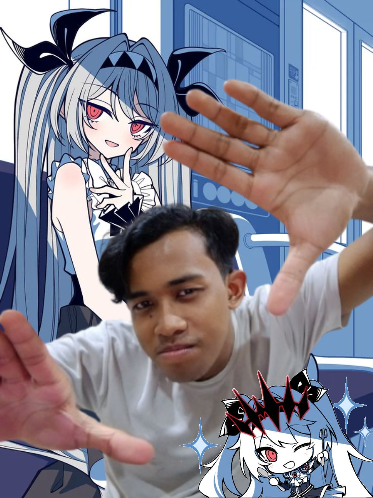

Player Profile

Yahoo, NazMinty here!
Hey, Naz here. Welcome to this page, I suppose. Nothing of fancy lies here. Only me.
Just the child who kept daydreaming. The child who kept fantasizing. The child who thought thinking is moving. Well, unfortunately the child is wrong. Oh, how wrong the child was, not knowing that his illusion of progress would soon shatter. The child has nothing else that keeps him together other than his promise. A promise that will likely never be fulfilled. But he still kept the promise, holding on to it like a oath of life. Yet the child does not move. He remains rooted in place... doing nothing but getting lost in his own thoughts, hoping that everything will go the way he wanted it to be. How foolish of the child.
Should the child just give up? Should the child stop dreaming? Should he stop hoping? Stop trying? Should the child just... stop? No. I will not allow the child to stop. No matter how slowly the child walks, even if he must crawl, for as long as an ember remains within his heart, I will not allow him to stop. I will keep moving forward, no matter the ending of this story. Conflict will remain. Stagnation is real. Yet neither shall ever stop me permanently. And at the end of the day, I shall stand witness to the fruit of our labour. We shall witness the fulfillment of the promise we kept.
- Full Name: NAZRUL AMINUDDIN BIN NOR AZAHAM
- Metric No.: E20251035445
- Programme: GAME DESIGN AND DEVELOPMENT
- Course: DGS1063 Interactive Web Design Development
- Hobby: Gaming, designing, binge watching anime
Why I'm Here
One of the reasons I chose this course is my love for gaming. Yet over time, I found myself disliking games built solely for profit, where monetization is prioritized while satisfying gameplay is left behind. I came here because I wish to change that. I want to create games that I myself would find meaningful, engaging, and worth playing.
Yet as time passed, I began to question whether I was truly built for this path. I am, perhaps, nothing more than a child who dreams endlessly of creating games, yet struggles to turn those dreams into reality. At times, I wondered if I should have simply chosen engineering instead, where at least I already possessed its foundations.
Unfortunately, I live by a motto of my own:
"You choose your own hell, proceed with it."
To me, it means to keep moving forward despite the thorned vines that seek to slow me down. I chose this path, and so I choose to walk it. I may bleed. It may hurt. The road ahead may be lined with thorns, spikes, and flame. Yet I shall not stop.
For the path forward still exists, and I will not turn back.